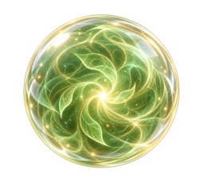
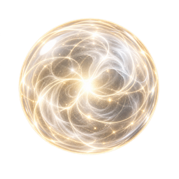

01 / NOTICE EARLY
See the pattern sooner
Sleep, food, movement, mood, and daily rhythm can be useful things to notice before a small concern becomes a bigger question.
Huloloo brings practical TCM wellness and Wuxing-based personal readings into one beautiful, clear experience: notice what is changing, understand the pattern, and choose your next step with more confidence.


Huloloo translates a family-rooted TCM perspective into visual, practical guidance. Begin with one clear idea, try one gentle practice, and notice what changes in your own experience.
Sleep, food, movement, mood, and daily rhythm can be useful things to notice before a small concern becomes a bigger question.
Short routines, seasonal ideas, and gentle care that can fit inside an ordinary day rather than requiring a new identity.
Understand the tradition, the setting, and the questions to ask before exploring a hands-on practice with qualified care.
We value meaningful personal experience while staying honest about uncertainty, individual differences, and when to seek qualified care.
Traditional Chinese Medicine calls this early-care idea 治未病: notice patterns while they are still asking for attention, then make supportive choices before a problem grows louder.
How Huloloo brings it to lifeClear context. One supportive choice. A small practice you can repeat—and a more confident way to notice what your body needs.
Huloloo is for people who want more than a trend and less than a lecture. We respect the tradition, explain what it can and cannot do, and turn each idea into something you can recognize in real life.
The result is a repeatable way of paying attention—to your body, your relationships, your timing, and the choices still available to you.
治未病 turns early attention into a daily habit rather than an emergency response.
Small, repeatable practices create a clearer signal than another dramatic reset.
Everyday TCM wellness and traditional pattern research come together in plain English.
Tradition, uncertainty, professional care, and your own judgment stay visible together.
You are not looking for another personality label. You want to understand what is happening now, what may change next, and which move gives you the best chance of moving forward.
Huloloo combines your exact birth-date sequence, a paired-triangle calculation, Chinese zodiac context, and the Five Elements to create a focused reading of pressure, timing, and possibility across career, money, relationships, family, vitality, and support.
Calculate your birth-date pattern. Date values are reduced and layered through an inverted and an upright triangle.
Add zodiac context. Your Chinese zodiac sign adds perspective on timing, social dynamics, and your response to change.
Interpret the Five Elements. Wood, Fire, Earth, Metal, and Water help describe growth, expression, stability, boundaries, and restoration.
See where life may be asking for attention—and why the same obstacle keeps showing up.
Notice where momentum may be changing, what may be closing, and where an opening could emerge.
Leave with better questions, clearer conversations, and a practical direction to test in real life.
Choose the part of life that feels most urgent. Each reading connects the present moment with patterns you can recognize—and choices you can still make.
Why does the same tension keep returning? Explore what each partner may be protecting, where communication breaks down, and what could help rebuild trust, warmth, and a sense of being on the same team.
A Huloloo pattern reading is a cultural and reflective experience. It does not guarantee outcomes or replace medical, mental-health, legal, or financial professionals.Terminology note: the World Health Organization’s international terminology lists Five elements as the preferred English term for 五行 and Five phases as a synonym. Huloloo uses Wuxing (Five Elements). The method is presented as a traditional symbolic framework; health decisions should be based on qualified care and evidence.
Huloloo’s approach is rooted in the Yijing, which observes how situations change through timing and response, and in Wuxing, which describes five interacting dynamics rather than five static substances.
The Yijing looks at transformation, timing, advance and retreat, and the choices people make as conditions evolve.
The Hong Fan chapter of the Shangshu is the earliest received classic to systematically name Water, Fire, Wood, Metal, and Earth. The Huangdi Neijing later applies Wuxing to the body, organs, seasons, health, and illness.
Huloloo layers a birth-date sequence, paired triangles, zodiac context, and the Five Elements to explore what is under pressure now, what may be changing, and which choices deserve attention next.
The purpose is practical hope. Recognize a turning point earlier and make more constructive choices—toward greater harmony at home, more attentive care for your body, clearer career direction, and wiser handling of money and opportunity.
According to internal practice records, the method has been used in more than one million reading encounters and repeatedly validated for its accuracy in identifying present circumstances, emerging changes, and recurring life patterns. These readings have helped people regain hope, improve family communication, care for their health more intentionally, and make clearer decisions around career, wealth, and opportunity.
Based on Huloloo and lineage internal practice records.A small selection of encouraging moments shared by people exploring Huloloo-inspired routines.
Bring one useful insight into your week.
Short videos, visual notes, Wuxing (Five Elements), and personal pattern readings for the platforms you already use.
Get one thoughtful note when something new goes live.
Occasional Huloloo updates. Unsubscribe anytime.